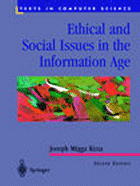
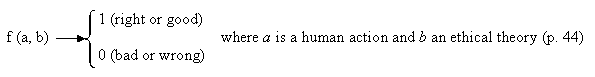

|  |
| About IR |
| Editors |
| Author instructions |
| Copyright |
| Author index |
| Subject index |
| Search |
| Reviews |
| Register |
| Home |
Kizza, Joseph M. Ethical and social issues in the information age. 2nd ed. New York: Springer Verlag, 2003. xxiii, 374 p. (Series: Texts in Computer Science). ISBN: 0-387-95421-X. $49.95 .
Kizza's book is written as a textbook for the undergraduate and advanced students in computer science and IT departments. The preface to the first edition states that, "Students in computer and engineering sciences, computer information and information management systems, and library sciences will also find the book particularly useful" (p. xiv).
The fact that the textbook of this kind is printed as a expanded new edition shows that the necessity to address the moral and legal issues posed by rapid advances of computer sciences and information technologies is urgent. The new technological possibilities, computing paradigms, the actual applications raise so many unexpected problems of this nature that the inability to adapt our ethical and moral rules to the speed of changes is quite evident.
The publication addresses the social, political and legal challenges related to the emergence and convergence of information and communication technologies from the point of view of morality and ethics. It provides definitions of basic concepts and illustrates the moral and ethical dilemmas by examples of present life.
The coverage of topics is very wide: survey of the history of computing, information technology influence on morality and the law, the overview of computer crimes, requirements for computer science curricula, discussion on rights, freedoms, and infringements of those, assessment of a work-place from the point of view of privacy, the issue of surveillance, problems of intellectual property, creating a virtual office, quality of software, professional codes of conduct of various relevant professions, artificial intelligence, etc. In general, the scope of issues is too wide for anything but a superficial pointing out. In all eleven chapters, the author is trying to do more than that by providing scenarios for discussions, exercises, lists of further reading and so on. In general, this is an honest attempt to address an important area of education that otherwise is rather neglected. As my Esperantist friends claim "Pli bona io, ol nenio" (Better something, than nothing).
However, having said all that, I would not wish that the young people learn ethics and acquire understanding of morality from this textbook. Of course, a textbook for undergraduate students should be accessible and understandable, but not simplistic. Maybe it is fun for computer students to see a functional definition of ethics in formulas, like following:

but I feel quite uneasy about such an approach. The whole attitude of the author seems also to belong more to the market society than to the information age. Besides, at places the text is not only simplistic - it is misleading or plain nonsense.
Consider the following:
"One can, for example, reproduce Monet's painting for one's bedroom but not for profit because such an action is unlawful and one intrinsically knows that it is wrong." (p. 61)Actually there is nothing illegal about reproducing Monet's pictures and selling them for profit. A whole industry all over the world earns money by selling art reproductions. There cannot be any intrinsic knowledge sayting that it is "wrong", because it's "good" to make treasures of art as accessible as possible for the wide public. What is wrong and illegal is deceiving people by selling reproductions as if they were originals. I will not comment on a further passage in text, which actually defines the whole idea of human creativity as "wrong" and "illegal".
The famous prisoner's dilemma is commonly viewed as the puzzle illustrating a conflict between individual and group rationality. It shows a situation of a group whose members pursuing rational self-interest may all end up worse off than a group whose members act contrary to rational self-interest. There can be other uses and applications of the famous puzzle. Kizza presents it as an example showing that "not having all information one needs before making a decision can be problematic" (p. 83). My old professor of ethics would have pronounced this as morally immature understanding.
The author also professes: "We have come to learn that information is a treasure in itself: the more you have, the better". (p. 100). This is definitely entirely opposite to what the information professionals know for certain.
Speaking in legal terms, I find the author of this book guilty not only of an oversimplification of complicated issues, but also in some cases of primitive reductionism of those and at times even of a lack of common sense. But the chapter about historical development of computing I would recommend to all my students.
Elena Macevičiūtė
Högskolan i Borå
Sweden
September, 2003
How to cite this review
Macevičiūtė, E. (2003) Review of: Kizza, Joseph M. Ethical and social issues in the information age. 2nd ed. New York: Springer Verlag, 2003. Information Research, 9(1), review no. R113 [Available at: http://informationr.net/ir/reviews/revs113.html]